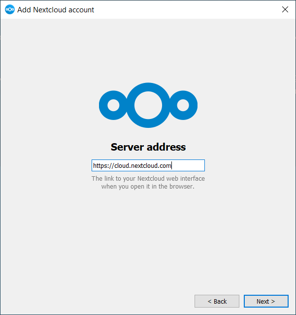
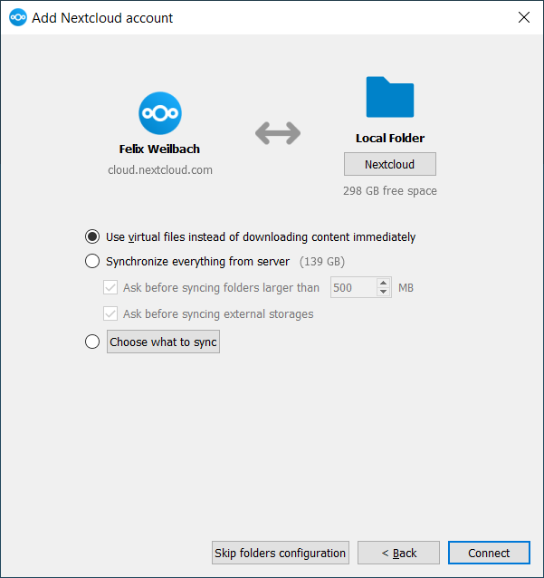

Suiteáil
Is féidir leat an leagan is déanaí de Chliant Sioncrónaithe Deisce Nextcloud a íoslódáil ón leathanach íoslódála Nextcloud. Tá cliaint ann le haghaidh Linux, macOS, agus Microsoft Windows.
Is iad na heisiúintí freastalaí a dtacaítear leo faoi láthair ná na trí leagan cobhsaí is déanaí tráth foilsithe. Ciallaíonn sé go bhfuil an latest tá sraith scaoileadh ag tacú le mórleaganacha freastalaí cobhsaí. Féach https://github.com/nextcloud/server/wiki/Maintenance-and-Release-Schedule le haghaidh mórleaganacha a dtacaítear leo.
Tá an suiteáil ar macOS agus Windows mar an gcéanna le haon fheidhmchlár bogearraí: íoslódáil an clár agus ansin cliceáil faoi dhó chun an tsuiteáil a sheoladh, agus ansin lean an draoi suiteála. Tar éis é a shuiteáil agus a chumrú coimeádfaidh an cliant sioncronaithe é féin cothrom le dáta go huathoibríoch; féach An Nuashonrú Uathoibríoch le haghaidh tuilleadh eolais.
Ní mór d'úsáideoirí Linux na treoracha ar an leathanach íoslódála a leanúint chun an stór cuí dá ndáileadh Linux a chur leis, an eochair sínithe a shuiteáil, agus ansin a mbainisteoirí pacáiste a úsáid chun an cliant sioncrónaithe deisce a shuiteáil. Déanfaidh úsáideoirí Linux a gcliaint sioncronaithe a nuashonrú freisin trí bhainisteoir pacáiste, agus taispeánfaidh an cliant fógra nuair a bheidh nuashonrú ar fáil.
Ní mór go mbeadh bainisteoir pasfhocail cumasaithe ag úsáideoirí Linux freisin, mar shampla GNOME Keyring nó KWallet, ionas gur féidir leis an gcliant sioncronaithe logáil isteach go huathoibríoch.
Gheobhaidh tú naisc freisin chuig cartlanna cód foinse agus leaganacha níos sine ar an leathanach íoslódála.
Riachtanais Chórais
Windows 10+ (64-giotán amháin)
macOS 12.0+ (64-giotán amháin)
Linux (Ubuntu 22.04 nó openSUSE 15.5 nó Alma 8 nó ...) (64-giotán amháin)
Note
Maidir le dáiltí Linux, tacaímid, más indéanta go teicniúil, leis na heisiúintí reatha LTS. Maidir le BSD, tugaimid tacaíocht dóibh má tá sé indéanta go teicniúil ach ní dhéanaimid tástáil
Suiteáil Windows a shaincheapadh
Más mian leat Cliant Sioncrónaithe Deisce Nextcloud a shuiteáil ar do chóras áitiúil, is féidir leat an comhad .msi a sheoladh agus é a chumrú sa draoi a thagann aníos.
Gnéithe
Soláthraíonn an suiteálaí MSI roinnt gnéithe is féidir a shuiteáil nó a bhaint ina n-aonar, ar féidir leat a rialú freisin trí ordú-líne, má tá an suiteáil á uathoibriú agat, ansin rith an t-ordú seo a leanas:
msiexec /passive /i Nextcloud-x.y.z-x64.msi
Suiteáilfidh an t-ordú Cliant Sioncrónaithe Deisce Nextcloud isteach sa suíomh réamhshocraithe leis na gnéithe réamhshocraithe cumasaithe. Más mian leat a dhíchumasú, m.sh., deilbhíní aicearra deisce is féidir leat an t-ordú thuas a athrú go díreach chuig an méid seo a leanas:
msiexec /passive /i Nextcloud-x.y.z-x64.msi REMOVE=DesktopShortcut
Féach an tábla seo a leanas le haghaidh liosta de na gnéithe atá ar fáil:
Gné |
Cumasaithe de réir réamhshocraithe |
Cur síos |
Maoin le díchumasú |
|---|---|---|---|
Cliant |
Sea, ag teastáil |
An cliant iarbhír |
|
Aicearra Deisce |
Tá |
Cuireann sé aicearra leis an deasc |
|
Aicearraí StartMenu |
Tá |
Cuireann sé aicearra leis an roghchlár tosaigh |
|
Eisínteachtaí Shell |
Tá |
Cuireann comhtháthú Explorer leis |
|
Suiteáil
Is féidir leat a roghnú freisin an cliant féin a shuiteáil ach an t-ordú seo a leanas a úsáid:
msiexec /passive /i Nextcloud-x.y.z-x64.msi ADDDEFAULT=Client
Más mian leat mar shampla gach rud a shuiteáil ach an ghné DesktopShortcut agus ShellExtensions, tá dhá fhéidearthacht agat:
Ainmníonn tú go sainráite na gnéithe go léir is mian leat a shuiteáil (liosta bán) ina bhfuil
Clientsuiteáilte i gcónaí ar aon nós:msiexec /passive /i Nextcloud-x.y.z-x64.msi ADDDEFAULT=StartMenuShortcuts
Téann tú thar na hairíonna
NO_DESKTOP_SHORTCUTagusNO_SHELL_EXTENSIONS:msiexec /passive /i Nextcloud-x.y.z-x64.msi NO_DESKTOP_SHORTCUT="1" NO_SHELL_EXTENSIONS="1"
Note
Cuimhníonn an Nextcloud .msi na hairíonna seo, mar sin ní gá duit iad a shonrú ar uasghráduithe.
Note
Ní féidir leat iad seo a úsáid chun na gnéithe suiteáilte a athrú, más mian leat é sin a dhéanamh, féach an chéad chuid eile.
Gnéithe Suiteáilte a Athrú
Is féidir leat na gnéithe suiteáilte a athrú ar ball trí úsáid a bhaint as airíonna REMOVE agus ADDDEFAULT.
If you want to add the desktop shortcut later, run the following command:
msiexec /passive /i Nextcloud-x.y.z-x64.msi ADDDEFAULT="DesktopShortcut"
Más mian leat é a bhaint, níl ort ach an t-ordú seo a leanas a rith:
msiexec /passive /i Nextcloud-x.y.z-x64.msi REMOVE="DesktopShortcut"
Coinníonn Windows súil ar na gnéithe suiteáilte agus ní dhéanfaidh úsáid REMOVE nó ADDDEFAULT ach difear do na gnéithe luaite.
Déan comparáid idir REMOVE agus ADDDEFAULT <https://msdn.microsoft.com/en-us/library/windows/desktop/16v=an Windows Treoir Suiteálaí.
Note
Ní féidir leat REMOVE a shonrú ar an tsuiteáil tosaigh mar díchumasóidh sé gach gné.
Fillteán Suiteála
Is féidir leat an fillteán suiteála a choigeartú ach an t-airí INSTALLDIR a shonrú mar seo:
msiexec /passive /i Nextcloud-x.y.z-x64.msi INSTALLDIR="C:\Program Files\Non Standard Nextcloud Client Folder"
Bí cúramach agus PowerShell á n-úsáid in ionad `` cmd.exe``, féadann sé a bheith deacair an spás bán a fháil chun éalú díreach ansin. Ní oibríonn ach an INSTALLDIR a shonrú mar seo ar an gcéad suiteáil, ní féidir leat an .msi a athagairt le cosán eile. Más gá duit é a athrú fós, díshuiteáil ar dtús é agus athshuiteáil leis an gcosán nua é.
Nuashonruithe Uathoibríocha a Dhíchumasú
Chun nuashonruithe uathoibríocha a dhíchumasú, is féidir leat an t-airí SKIPAUTOUPDATE a chur ar aghaidh.:
msiexec /passive /i Nextcloud-x.y.z-x64.msi SKIPAUTOUPDATE="1"
Seoladh Tar éis Suiteáil
Chun an cliant a sheoladh go huathoibríoch tar éis é a shuiteáil, is féidir leat pas a fháil sa mhaoin LAUNCH.:
msiexec /i Nextcloud-x.y.z-x64.msi LAUNCH="1"
Baineann an rogha seo an ticbhosca freisin chun ligean d’úsáideoirí cinneadh a dhéanamh an bhfuil siad ag iarraidh an cliant a sheoladh ar mhodh neamh-éighníomhach/ciúin.
Note
Níl aon éifeacht ag an rogha seo gan GUI.
Gan Atosaigh Tar éis Suiteáil
Déanann Cliant Nextcloud atosaigh a sceidealú tar éis é a shuiteáil chun a chinntiú go bhfuil an síneadh Explorer (dí) luchtaithe i gceart. Má tá tú ag tabhairt aire don atosaigh tú féin, is féidir leat an t-airí REBOOT a shocrú
msiexec /i Nextcloud-x.y.z-x64.msi REBOOT=ReallySuppress
Fágfaidh sé seo go scoirfear msiexec le hearráid ERROR_SUCCESS_REBOOT_REQUIRED (3010). Má léirmhíníonn d’uirlisiú imlonnaithe seo mar fhíorearráid agus gur mhaith leat é sin a sheachaint, b’fhéidir gur mhaith leat an DO_NOT_SCHEDULE_REBOOT a shocrú ina ionad sin:
msiexec /i Nextcloud-x.y.z-x64.msi DO_NOT_SCHEDULE_REBOOT="1"
Treoraí Suiteáil
Tógann an draoi suiteála tú céim ar chéim trí roghanna cumraíochta agus socrú cuntais. Ar dtús, ní mór duit URL do fhreastalaí Nextcloud a chur isteach.

Má tá cuntas agat cheana féin ar shampla Nextcloud, ba mhaith leat an cnaipe Logáil isteach i do Nextcloud a bhrú. Mura bhfuil sampla Nextcloud agat agus cuntas ann, b’fhéidir gur mhaith leat cuntas a chlárú le soláthraí. Brúigh Cruthaigh cuntas le Soláthraí sa chás sin. Cuimhnigh le do thoil go bhféadfadh an cliant deisce a bheith tógtha gan tacaíocht soláthraí. Sa chás sin, ní fheicfidh tú an leathanach seo. Ina áit sin, tabharfar leid duit leis an gcéad leathanach eile.

Cuir isteach an URL do do shampla Nextcloud. Is é an URL an URL céanna a chlóscríobhann tú isteach i do bhrabhsálaí nuair a dhéanann tú iarracht rochtain a fháil ar do shampla Nextcloud.

Anois ba chóir do bhrabhsálaí gréasáin a oscailt agus tú a spreagadh chun logáil isteach i do shampla Nextcloud. Cuir isteach d'ainm úsáideora agus do phasfhocal i do bhrabhsálaí gréasáin agus deonaigh rochtain. Tar éis duit é sin a dhéanamh, téigh ar ais chuig an draoi. Cuimhnigh le do thoil go mb’fhéidir nach mbeidh ort d’ainm úsáideora agus do phasfhocal a chur isteach má tá tú logáilte isteach i do bhrabhsálaí cheana féin.

Ar an scáileán roghanna fillteán logánta, is féidir leat do chuid comhad go léir a shioncronú ar an bhfreastalaí Nextcloud, nó fillteáin aonair a roghnú. Is é Nextcloud an fillteán sioncronaithe áitiúil réamhshocraithe, i do eolaire baile. Is féidir leat é seo a athrú freisin.
Nuair a bheidh do fhillteáin sioncronaithe críochnaithe agat, cliceáil ar an gcnaipe Ceangail ag bun ar dheis. Déanfaidh an cliant iarracht ceangal a dhéanamh le do fhreastalaí Nextcloud, agus nuair a éiríonn leis, dúnann an draoi é féin. Is féidir leat an ghníomhaíocht sioncronaithe a fheiceáil anois má osclaíonn tú an príomh-idirphlé trí chliceáil ar dheilbhín an tráidire.